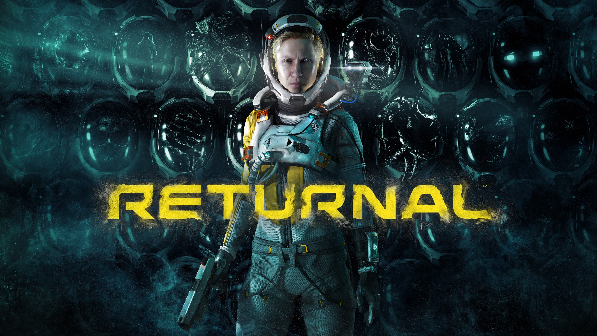
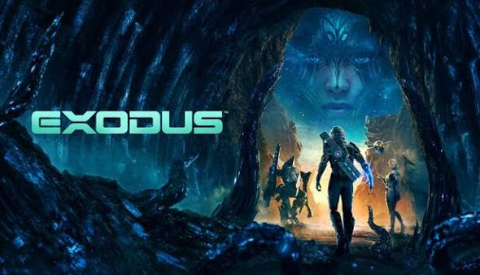

Returnal PC Port
Gameplay & Systems Programmer

Built the video settings and UI and the in-game benchmark. Part of the core team that fixed most multiplayer bugs, plus a wide range of fixes across the game.
Focus: Unreal 4, PC porting, graphics settings, benchmarking tools, multiplayer stability, bug fixing
Exodus (Releasing in 2027)
AI Programmer

Built the boss system, including quadruped animation programming and AI, working closely with design and animation. Brought earlier enemies up to standard and helped maintain AI quality.
Focus: Unreal 5, boss AI, animation programming, design/animation collaboration, enemy AI
Unannounced Project – Proprietary Engine
UI Programmer
Extended the studio's in-house UI framework to meet the project's needs. Built the menu systems, settings and radial menus on top of it.
Focus: UI systems, proprietary engine
Unannounced Project – Multiplayer
Gameplay & UI Programmer
Built replication-aware inventory and loot systems in Unreal Engine 5, plus UI and general multiplayer gameplay programming.
Focus: Unreal Engine 5, inventory and loot, replication, UI

Made with a fully custom engine, using VisualStudio (C++), LUA, 3DMax, Fmod, PhysX, Substance and Cal3D.